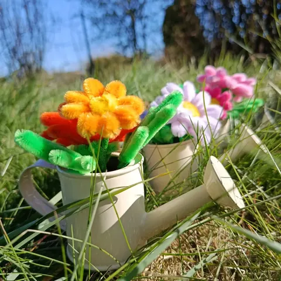

Une idée pour chaque occasion
Fleurs de Pâques
Jonquilles, tulipes, pensées et muguet : les fleurs du printemps, façonnées à la main en fil chenille, pour une table de Pâques fleurie qui ressort chaque année.
En images


Le printemps sur la table
À Pâques, la table se pare de jaune et de pastel. Un bouquet de jonquilles en vase, quelques pensées en pot et un arrosoir fleuri suffisent à donner un air de fête.
Après la fête, rangez-les dans une boîte : elles ressortiront intactes l’année suivante.
Les fleurs de saison

Un cadeau pour le repas de famille
Invité à déjeuner ? Plutôt qu’un bouquet qui fanera dans la semaine, offrez un petit pot de fleurs éternelles, avec sa carte de vœux offerte.
Mes idées de créations
Les autres occasions
Les fleurs de l’atelier
- Rose en fil chenille
- Tulipe en fil chenille
- Lys en fil chenille
- Gerbera en fil chenille
- Pavot et coquelicot en fil chenille
- Arum en fil chenille
- Hortensia en fil chenille
- Tournesol en fil chenille
- Muguet en fil chenille
- Lavande en fil chenille
- Jonquille en fil chenille
- Marguerite en fil chenille
- Pensée en fil chenille